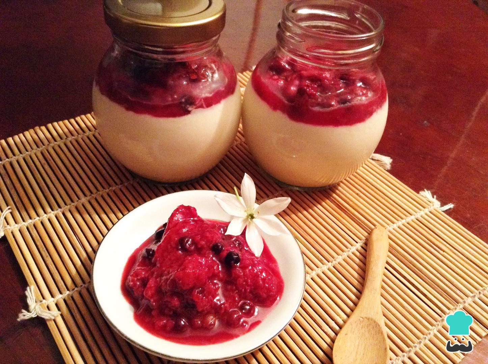

Panna Cotta de Morango

Ninguém consegue resistir a uma sobremesa deliciosa e, de forma geral, as sobremesas italianas são famosas em todo o mundo. Pensando nisso, ensinamos você a preparar panna cotta de morango, uma mistura de creme de leite, açúcar ou mel e gelatina, que resulta num doce semelhante a um pudim. Para conferir mais sabor e um aspeto caprichado, esta panna cotta caseira é servida com calda de morango. Confira abaixo todos os ingredientes e preparo, e experimente!
Ingredientes:
- 300 gramas de cream cheese (creme de queijo)
- 200 mililitros de Creme de leite
- 7 gramas de Gelatina sem sabor
- 1 colher de café de Essência de baunilha
- 2 colheres de sopa de mel
- 50 gramas de Morangos frescos
- 50 gramas de mirtilos (opcional)
- 2 colheres de sopa de Açúcar mascavo
- 2 colheres de sopa de água
Modo de Fazer:
- A primeira coisa que você precisa fazer para preparar esta receita de panna cotta é reunir e pesar todos os ingredientes necessários.
- Em uma panela funda coloque o creme de leite e o mel, e leve ao fogo médio-baixo, mexendo para misturar. Quando ferver, desligue o fogo e deixe esfriar.
- O passo seguinte desta panna cotta de morango é, numa taça funda, bater o cream cheese e a essência de baunilha, até obter um creme.
- Assim que o creme de leite estiver em temperatura ambiente, misture muito bem com o cream cheese.
- À parte, hidrate a gelatina em um pouco de água e adicione ao creme desta panna cotta caseira. Misture bem, prove e, se achar necessário, adicione um pouco mais de mel ou de essência de baunilha.
- Após o passo anterior, distribua a mistura por frascos de vidro esterilizados ou forminhas individuais. Reserve na geladeira por 2 ou 3 horas, aproximadamente, ou até que fique firme.
- Enquanto isso, prepare a calda de morango da panna cotta: leve ao fogo médio uma panela com os morangos, os mirtilos (se quiser), o açúcar e a água. Deixe cozinhar até as frutas murcharem e a mistura espessar, como se fosse uma geleia. Retire do fogo e deixe esfriar.
- Quando a panna cotta estiver consistente, adicione a calda de fruta preparada no passo anterior, e está pronta a servir! Delicie-se com esta panna cotta de morango e diga-nos o que achou. Esperamos que goste!